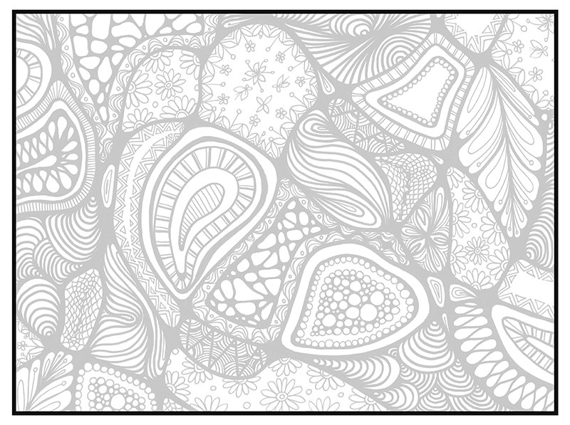

СКІЛЬКИ ПРОЙДЕ, ПЕРШ НІЖ ТИ ПІДНІМЕШ ГОЛОВУ?
8 абсурдних ситуацій. 1 квитанція втраченого часу. І патерн, підібраний під твій рівень глибини.
БЛІДИЙ КОНТУР → ГОТОВИЙ АРТ


АРТ
0% БЛІДИЙ КОНТУР
55% ПРОЯВЛЕНО
Проведи ручкою по блідому контуру — отримай деталізований графічний арт. Навички малювання не потрібні.
Введи ім’я та прізвище, щоб ми зафіксували твій патерн для друку.
Без обіцянок просвітлення. Жодної відповідальності за охололий чай і пропущені повідомлення.
01 / 08 · Тільки заходимо
12%
01 / 08 · ІНЦИДЕНТ ІЗ ЛАЗЕРНОЮ КРАПКОЮ
YPL // ДІАГНОСТИКА ГЛИБИНИ
ЗВІРЯЄМО ПОКАЗИ ГОДИННИКА ТА РІВЕНЬ ЗАЛИПАННЯ..._
Аналізуємо охололий чай, ігноровані повідомлення та витривалість ручки.
YPL
ТВОЯ КВИТАНЦІЯ ВТРАЧЕНОГО ЧАСУ
ЗАВЕРШЕНО:
ВТРАЧЕНИЙ ЧАС:
СТАТУС:
ТВІЙ ПАТЕРН ДЛЯ ТЕСТУ: №11
YPL · PREVIEW · №11
Це попередній перегляд патерна під твій рівень. Нічого скачувати не потрібно — твій вибір уже зафіксовано, ми роздрукуємо цей аркуш спеціально для тебе.
Дані автоматично передано в таблицю друку.